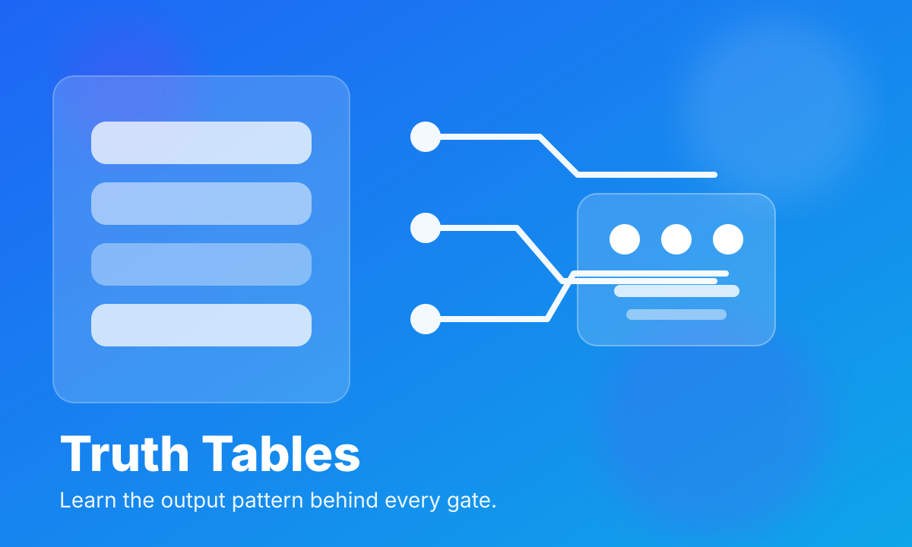
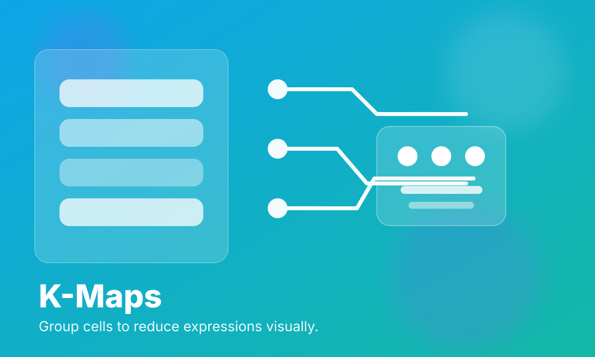

Digital Electronics Virtual Lab
A modern practical learning platform that teaches Digital Electronics A to Z through simulations, truth tables, logic gates, canonical forms, adders, and sequential circuit practice.
Instant learning feedback
Every gate, input switch, and circuit responds live so students immediately connect theory with observed output.
Syllabus-first structure
Modules are organized to mirror the full digital electronics syllabus, making it easy for colleges to map lessons and labs.
Desktop and mobile ready
Responsive layouts, a drawer menu, and fluid cards keep the experience clean on phones, tablets, and laptops.
A real practice environment, not a static notes page.
Toggle inputs, inspect truth tables, test arithmetic circuits, compare combinational and sequential logic, and review concise explanations without leaving the lab.
Interactive gate explorer
Test NOT, AND, OR, NAND, NOR, XOR, and XNOR with a live output indicator.
Boolean expression builder
Evaluate custom expressions and see the complete truth table instantly.
Arithmetic workbench
Half/full adders and subtractors help users understand carry and borrow flow.
Flip-flop stepping
SR, D, JK, and T behavior can be stepped one clock at a time.
A rotating gallery of key concepts
This auto-moving gallery keeps the lab visually alive while staying lightweight.



Bridges theory, practicals, and self-study in one place.
Students can practice before lab hours, instructors can use the modules as a teaching aid, and the same interface works as a revision desk before examinations.
Practice repeatedly until the logic becomes intuitive.
Demonstrate gate behavior and timing clearly in class.
Reduce setup time while preserving experimentation value.